Fifty aide les entreprises à transformer les formations en actions concrètes du quotidien. Ce projet est la refonte de l'onboarding de la plateforme qui permet aux collaborateurs de choisir leurs actions à réaliser.
01
Clarifier la proposition de valeur
02
Améliorer le taux de complétion
03
Améliorer l'activation utilisateur
Discovery
Données quantitatives
Avec Amplitude, nous savons que la complétion de l'onboarding chute fortement depuis avril 2024.
72, 8 %
Février 2024
72, 2 %
Mars 2024
64 %
Avril 2024
L'analyse du funnel a mis en évidence plusieurs points de friction :
Étape
Drop
Après création de compte
Faible (2 %)
Remplissage du profil
Moyen (10 %)
Priorisation des piliers
Fort (15, 7 %)
En avril 2024, les utilisateurs sont divisés en deux groupes :
60 %
Utilisateurs en pratique exploratoire (1 à 2 actions réalisées / semaine)
40 %
Utilisateurs en pratique soutenue (2 à 4 actions réalisées / semaine)
Hypothèses
01
Les utilisateurs ne comprennent pas le concept du produit
Le drop avant même la priorisation des piliers suggère une difficulté de compréhension avant la phase d'engagement.
02
Le choix de priorisation des pilliers arrive trop tôt
Les utilisateurs doivent prendre des décisions avant même d'avoir compris la valeur du produit.
03
Les utilisateurs n'ont pas d'actions proposées
Les utilisateurs n'ont pas d'étape d'engagement concret avec le produit après la phase de découverte passive.
Idéation
Flow existant
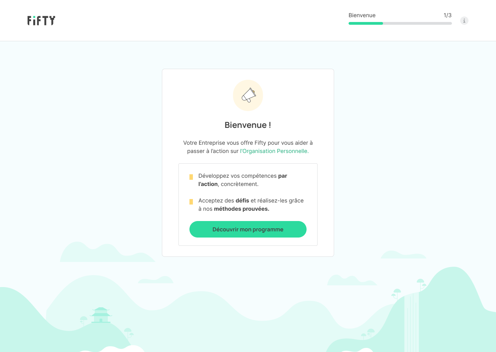
Étape 1 - Écran de bienvenue
L'utilisateur découvre la proposition de valeur de Fifty.
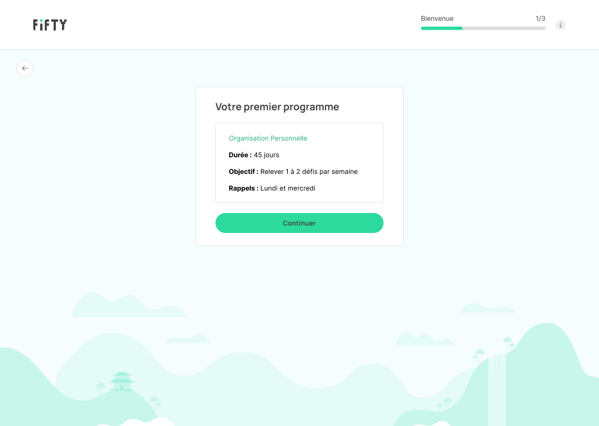
Étape 2 - Informations du programme
L'utilisateur retrouve des informations liées au programme.
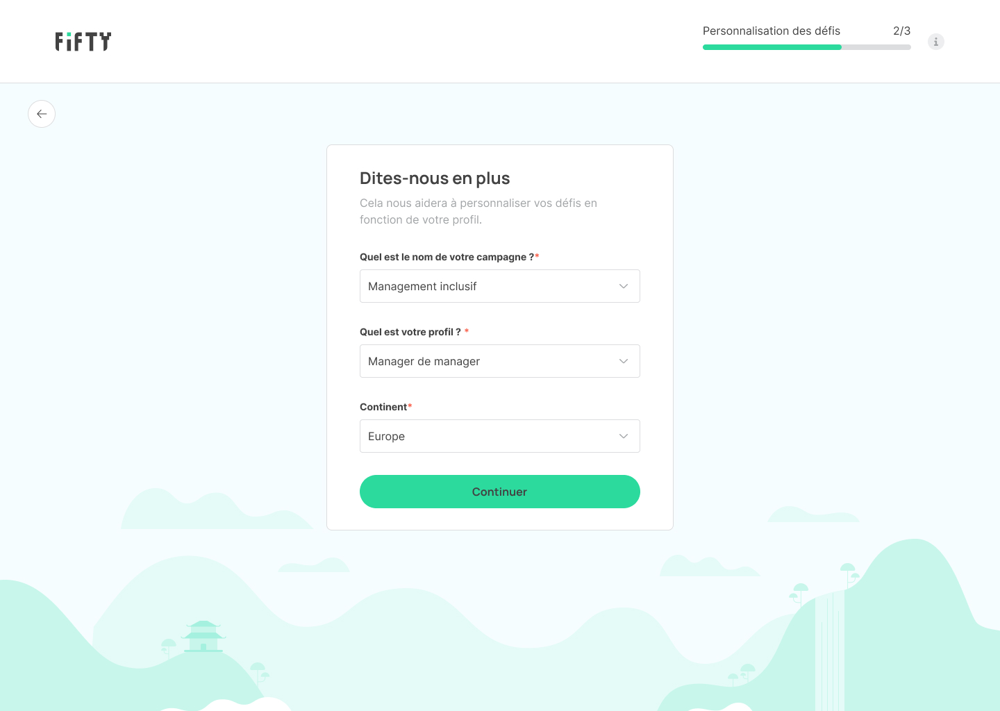
Étape 3 - Profil
L'utilisateur doit remplir quelques informations pour orienter le parcours.
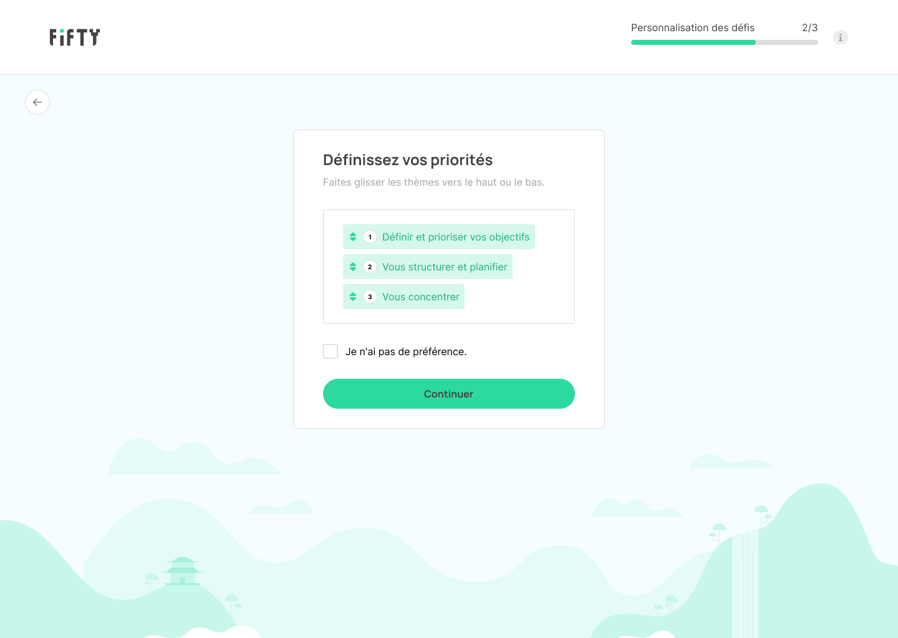
Étape 4 - Classement des thèmes
L'utilisateur doit classer les thèmes du programme par préférence.
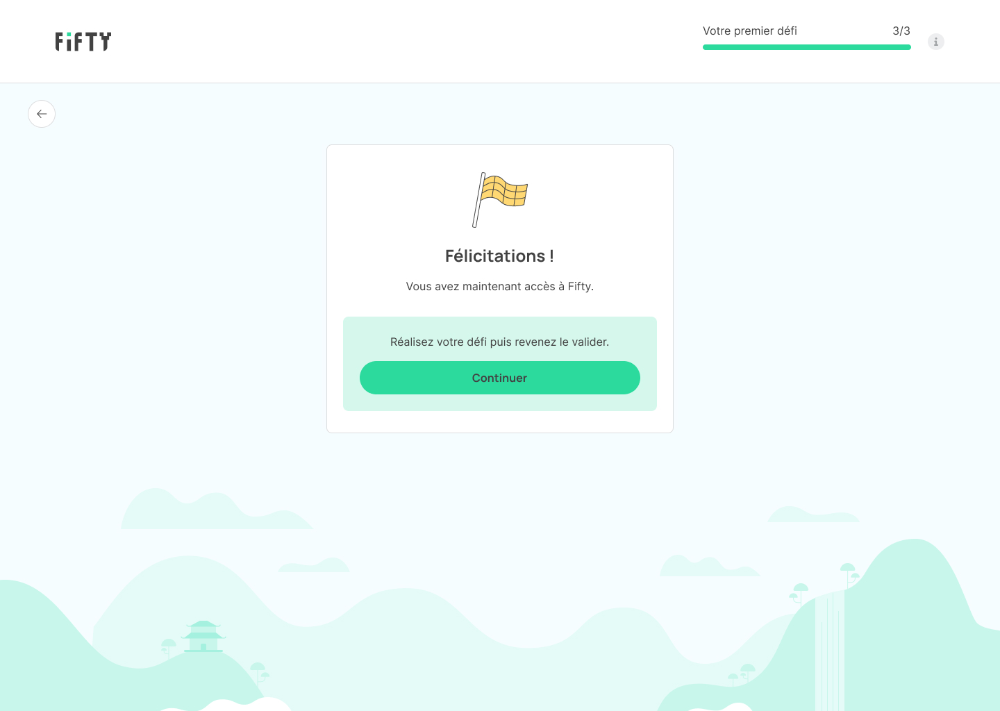
Étape 5 - Fin de l'onboarding
L'utilisateur a maintenant accès à Fifty pour réaliser des actions.
Décisions clés
Suite à l'analyse du flow existant, nos hypothèses et les retours des équipes support, nous faisons des choix :
AvantL'arrivée sur Fifty se fait sans transition.
ProblèmeLa première étape de l'onboarding n'est pas assez explicite concernant le lien entre l'entreprise cliente et Fifty.
DécisionDonner plus de contexte aux utilisateurs sur leur arrivée sur Fifty pour qu'ils comprennent plus facilement pourquoi ils se retrouvent sur cet outil.
Impact attenduAméliorer la transition entre la communication de l'entreprise et l'expérience produit et ainsi renforcer la confiance des utilisateurs dès les premières secondes.
AvantLe concept de Fifty est expliqué de manière abstraite.
ProblèmeIl n'y a qu'une étape dédiée au concept de Fifty, ce qui n'est pas assez pour que l'utilisateur comprenne concrètement de quoi il s'agit.
DécisionAjouter des étapes pour expliquer à l'utilisateur à quoi va lui servir l'outil, comment il fonctionne et les bénéfices qu'il va en tirer.
Impact attenduRéduire les abandons avant même d'atteindre le premier choix à faire de l'utilisateur.
AvantLe "choix" du thème n'est pas clair.
ProblèmeL'utilisateur ne choisit pas vraiment un thème, il les priorise, ce qui fera plus ou moins ressortir des actions. Cet effet n'est pas explicité.
DécisionFaire faire un vrai choix à l'utilisateur concernant un thème, en lui expliquant que les autres thèmes seront vus les semaines suivantes.
Impact attenduRéduire les incompréhensions et augmenter la confiance de l'utilisateur.
AvantAucune action n'est choisie lors de l'onboarding.
ProblèmeOn ne pousse pas l'utilisateur à choisir une action, ce qui ne lui permet pas de le lancer dans l'utilisation du produit.
DécisionAjouter une étape où l'utilisateur peut visualiser différentes actions et choisir celles qu'il souhaite réaliser.
Impact attenduAugmenter l'activation et l'engagement des utilisateurs en les encourageant à sélectionner des actions et à les réaliser pendant la semaine en cours.
Flow retravaillé
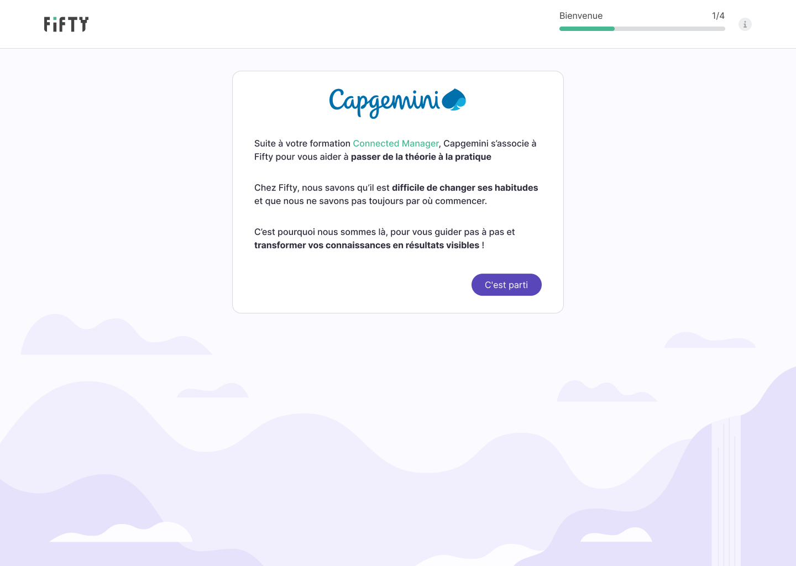
Étape 1 - Écran de bienvenue
Cette étape donne du contexte et explique à quoi sert Fifty.
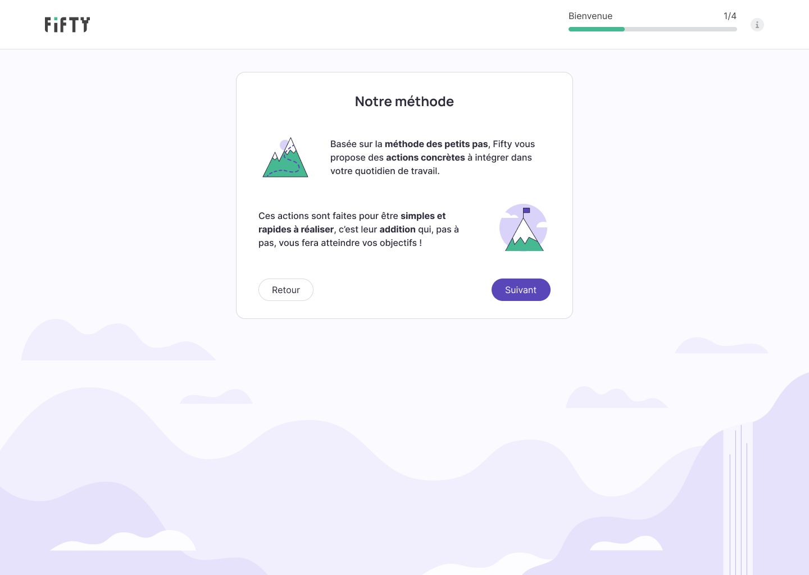
Étape 2 - La méthode
Cette étape explique en quoi consiste la méthode sur laquelle est basée Fifty.
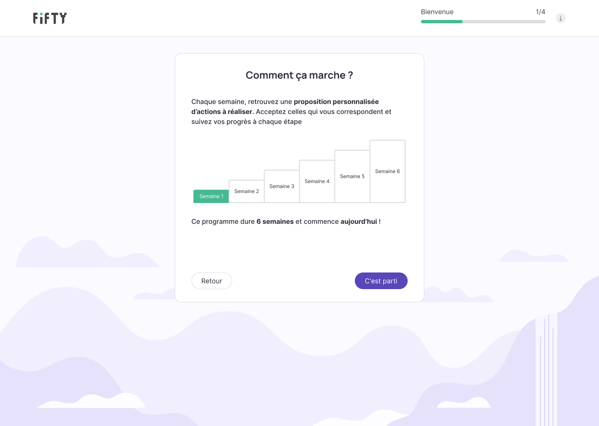
Étape 3 - Comment ça marche
Cette étape donne plus de détails sur le fonctionnement de la méthode.
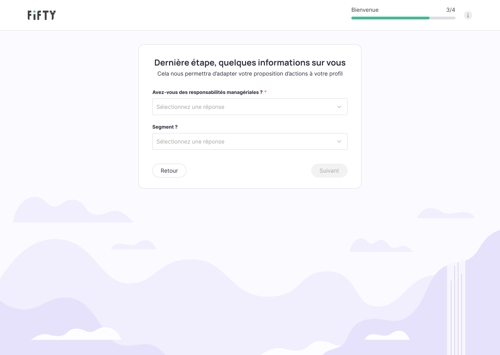
Étape 4 - Profil
Cette étape demande quelques détails sur l'utilisateur pour adapter les actions.
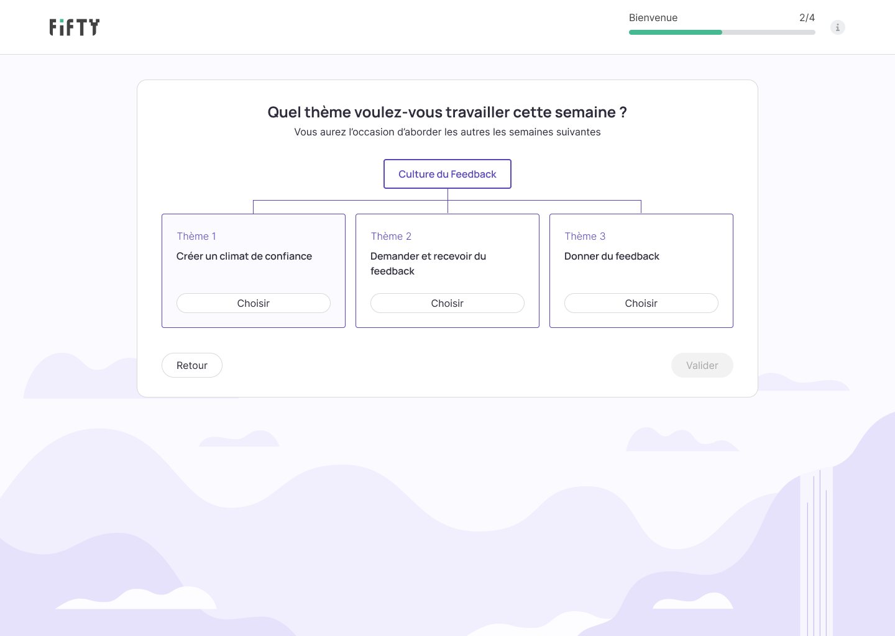
Étape 5 - Choix du thème
Cette étape explicite que tous les thèmes seront abordés.
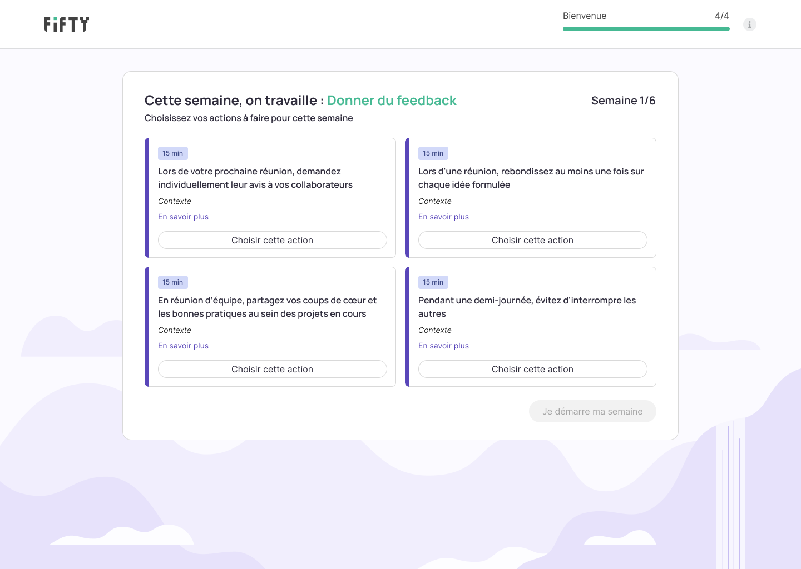
Étape 6 - Choix des actions
Cette étape permet de mettre tout de suite en action.
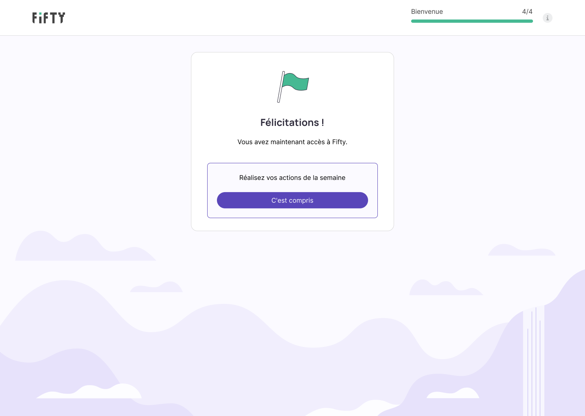
Étape 7 - Fin de l'onboarding
Cette étape appelle à réaliser les actions sélectionnées.
Impact & résultats
Nous avons analysé les données quantitatives 30 jours après le déploiement de la nouvelle version.
−4,7 points
de taux d'abandon avant le premier choix utilisateur (de 15,7 à 11 %)
+6 points
de taux de complétion de l'onboarding (de 64 % à 70 %)
+12 points
de taux d'utilisateurs en pratique soutenue (de 40 % à 52 %)
Les difficultés rencontrées
Clarifier la proposition de valeur a été un exercice difficile car chacun (dans l'équipe et dans l'entreprise) avait sa propre interprétation et sa propre façon de l'expliquer. Pour trouver un consensus, il a fallu challenger nos propres visions.
Nous voulions ajouter des illustrations pour aider à la compréhension de notre concept. Or, illustrer un concept abstrait a été un travail difficile à réaliser pour ma part. Il y avait des points de vue différents sur la manière d'illustrer "un changement basé sur la méthode des petits pas". Je me suis aidée de l'IA pour trouver des idées.
Nous voulions ajouter une étape de sélection d'actions. Or, il y avait un vrai désaccord sur le nombre d'actions proposées. J'ai réalisé plusieurs versions de prototype pour aider à la perception du flow et permettre de faire un choix avisé.
Ce que j'ai appris
Aligner l'équipe en interne est un prérequis du design. On ne peut pas clarifier quelque chose pour l'utilisateur tant que l'équipe ne l'a pas clarifié pour elle-même.
Les données disent "où" mais pas "pourquoi". Nous avions des données quantitatives pour localiser les drops, mais ce sont nos hypothèses et les retours utilisateurs qui nous ont expliqué leur cause.